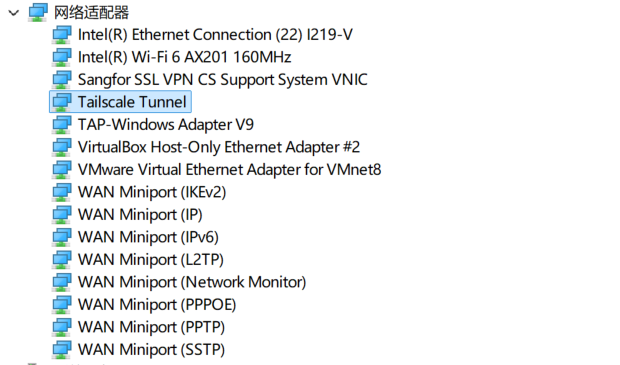

前言
很多时候我会需要RPC远程连接 Windows 主机进行远程办公，偶尔与好友组建虚拟局域网畅玩游戏。但是国内运营商会限制公网IP，NAT允许多个内网设备共享一个公网 IP，但也阻断了外部主动发起的连接。根据 NAT 类型的不同，穿透难度各异，其中对称型 NAT 最为棘手。为此，内网穿透与覆盖网络（Overlay Network）技术应运而生。其基本原理是：借助一个具有公网 IP 的中心服务器进行协调与身份认证，客户端通过 STUN 协议探测自身 NAT 类型，并尝试 UDP 打洞以建立点对点（P2P）直连；当直连失败时，则通过中继服务器转发加密流量。底层通常采用 WireGuard 等现代加密隧道协议，兼顾性能与安全。
因此我在腾讯云服务器上部署开源版本的透传服务端 Headscale，并配置 HTTPS 与中继服务，构建一个自主可控、安全高效的虚拟局域网，满足远程办公与游戏加速的日常需求。这里记录一些配置的脚本命令，部分涉及隐私安全的内容记录于其他地方。
准备工作
ssh连接公网服务器后，通过脚本确认服务器环境和性能
1
2
3
4
5
6
7
8
9
10
11
12
13
14
15
16
17
18
19
20
21
22
23
24
25
26
27
28
29
30
31
32
33
34
35
36
37
38
39
40
41
42
43
44
45
46
47
48
49
50
51
52
53
54
55
56
57
58
59
60
61
62
63
64
65
66
67
68
69
70
71
72
73
74
75
76
77
78
79
80
81
82
83
84
85
86
87
88
89
90
91
92
93
94
95
96
97
98
#!/bin/bash
# 服务器性能检测脚本
echo "=========================================="
echo " 服务器性能检测报告 - $(date '+%Y-%m-%d %H:%M:%S')"
echo "=========================================="
# 1. 系统基本信息
echo -e "\n[1] 系统信息"
echo "------------------------------------------"
echo "主机名: $(hostname)"
echo "操作系统: $(cat /etc/os-release | grep PRETTY_NAME | cut -d'"' -f2)"
echo "内核版本: $(uname -r)"
echo "架构: $(uname -m)"
echo "运行时间: $(uptime -p 2>/dev/null || uptime)"
# 2. CPU 信息
echo -e "\n[2] CPU 信息"
echo "------------------------------------------"
CPU_MODEL=$(grep "model name" /proc/cpuinfo | head -1 | cut -d: -f2 | sed 's/^ //')
echo "CPU 型号: ${CPU_MODEL:-未知}"
CPU_CORES=$(nproc)
echo "CPU 核心数: $CPU_CORES"
# 实时 CPU 使用率
CPU_USAGE=$(top -bn1 | grep "Cpu(s)" | awk '{print $2}' | cut -d'%' -f1)
echo "CPU 使用率: ${CPU_USAGE}%"
# 负载均值
echo -n "负载均值: "
cat /proc/loadavg | awk '{print $1" (1分钟) "$2" (5分钟) "$3" (15分钟)"}'
# 3. 内存信息
echo -e "\n[3] 内存信息"
echo "------------------------------------------"
free -h | awk 'NR==1{print " 总计 已用 可用 共享"} NR==2{print "内存: "$2" "$3" "$4" "$5} NR==3{print "交换: "$2" "$3" "$4}'
# 内存使用率
MEM_TOTAL=$(free -m | awk 'NR==2{print $2}')
MEM_USED=$(free -m | awk 'NR==2{print $3}')
MEM_PERCENT=$(awk "BEGIN{printf \"%.1f\", ($MEM_USED/$MEM_TOTAL)*100}")
echo "内存使用率: ${MEM_PERCENT}%"
# 4. 磁盘信息
echo -e "\n[4] 磁盘信息"
echo "------------------------------------------"
df -hT | grep -E "^/dev|^Filesystem" | awk '{printf "%-20s %-6s %-6s %-6s %-5s %s\n", $1, $3, $4, $5, $6, $7}'
# 根分区使用率
DISK_PERCENT=$(df -h / | awk 'NR==2{print $5}')
echo "根分区使用率: $DISK_PERCENT"
# 磁盘总空间
DISK_TOTAL=$(df -h / | awk 'NR==2{print $2}')
echo "根分区总空间: $DISK_TOTAL"
# 5. 网络信息
echo -e "\n[5] 网络信息"
echo "------------------------------------------"
echo "IP 地址:"
ip -4 addr show | grep "inet " | grep -v "127.0.0.1" | awk '{print " " $2 " (" $NF ")"}'
# 公网 IP（尝试获取）
PUBLIC_IP=$(curl -s --max-time 5 ifconfig.me 2>/dev/null || echo "获取失败")
echo "公网 IP: $PUBLIC_IP"
# 网络连接数
ESTABLISHED=$(ss -tun state established 2>/dev/null | wc -l)
echo "已建立连接数: $ESTABLISHED"
# 6. Headscale 关键指标评估
echo -e "\n[6] Headscale 可行性评估"
echo "=========================================="
# CPU 评估
if [ "$CPU_CORES" -ge 2 ]; then
echo "✅ CPU 核心数: $CPU_CORES (推荐 ≥2) - 满足"
elif [ "$CPU_CORES" -eq 1 ]; then
echo "⚠️ CPU 核心数: 1 (最低要求) - 个人使用可接受"
else
echo "❌ CPU 核心数不足"
fi
# 内存评估
if [ "$MEM_TOTAL" -ge 2048 ]; then
echo "✅ 内存: ${MEM_TOTAL}MB (推荐 ≥2048MB) - 满足"
elif [ "$MEM_TOTAL" -ge 512 ]; then
echo "⚠️ 内存: ${MEM_TOTAL}MB (最低要求 512MB) - 基本可用"
elif [ "$MEM_TOTAL" -ge 256 ]; then
echo "⚠️ 内存: ${MEM_TOTAL}MB (极简运行可行，但风险较高)"
else
echo "❌ 内存不足，Headscale 需要至少 256MB"
fi
# 磁盘评估
DISK_NUM=$(echo $DISK_PERCENT | tr -d '%')
if [ "$DISK_NUM" -ge 90 ]; then
echo "❌ 磁盘使用率: $DISK_PERCENT - 空间紧张，建议清理"
elif [ "$DISK_NUM" -ge 80 ]; then
echo "⚠️ 磁盘使用率: $DISK_PERCENT - 注意空间管理"
else
echo "✅ 磁盘使用率: $DISK_PERCENT - 空间充足"
fi
echo -e "\n=========================================="
check_nginx.sh检查nginx的配置状况
1
2
3
4
5
6
7
8
9
10
11
12
13
14
15
16
17
18
19
20
21
22
23
24
25
26
27
28
29
30
31
32
33
34
35
36
37
38
39
40
41
42
43
44
45
46
47
48
49
50
51
52
53
54
55
56
57
58
59
60
61
62
63
64
65
66
67
68
69
70
71
72
73
74
75
76
77
78
79
80
81
82
83
84
85
86
87
88
89
90
91
92
93
94
95
96
97
98
99
100
101
102
103
104
105
106
107
108
109
110
111
#!/bin/bash
# check_nginx.sh - 检查 Nginx 状态、域名和后端类型
echo "=========================================="
echo " Nginx 检查报告 - $(date '+%Y-%m-%d %H:%M:%S')"
echo "=========================================="
# 1. 服务状态
echo -e "\n[1] Nginx 服务状态"
echo "------------------------------------------"
if command -v systemctl >/dev/null 2>&1; then
systemctl status nginx --no-pager -l 2>&1 | head -15
else
service nginx status 2>&1 | head -10
fi
# 2. 进程与版本
echo -e "\n[2] 进程与版本"
echo "------------------------------------------"
ps -ef | grep [n]ginx || echo "未发现 nginx 进程"
nginx -v 2>&1 || echo "nginx 命令未找到"
# 3. 配置语法测试
echo -e "\n[3] 配置语法测试"
echo "------------------------------------------"
nginx -t 2>&1 || echo "配置测试失败或需要 sudo"
# 4. 监听端口
echo -e "\n[4] 监听端口"
echo "------------------------------------------"
ss -tlnp 2>/dev/null | grep -E 'nginx|:80|:443' || netstat -tlnp 2>/dev/null | grep -E 'nginx|:80|:443' || echo "未找到监听端口"
# 5. 读取完整配置
echo -e "\n[5] 域名与后端服务解析"
echo "------------------------------------------"
if nginx -T >/dev/null 2>&1; then
CONF=$(nginx -T 2>/dev/null)
elif sudo -n nginx -T >/dev/null 2>&1; then
CONF=$(sudo -n nginx -T 2>/dev/null)
else
echo "无法读取完整配置（需要 root 或 sudo 权限）。请用 sudo 运行本脚本。"
exit 1
fi
# 统计 server 块
SERVER_COUNT=$(echo "$CONF" | grep -cE '^[[:space:]]*server[[:space:]]*\{')
echo "共发现 server 块: $SERVER_COUNT 个"
echo ""
echo "$CONF" | awk '
function trim(s){ gsub(/^[ \t]+|[ \t]+$/,"",s); return s }
function reset(){ server_name=""; listen=""; root=""; alias=""; proxy=""; fastcgi=""; uwsgi=""; grpc=""; return_dir="" }
function print_server(){
if (server_name != "" || listen != "" || root != "" || proxy != "" || fastcgi != "" || uwsgi != "" || grpc != "") {
print "----------------------------------------"
print "域名/ServerName: " (server_name==""?"(未指定)":server_name)
print "监听: " (listen==""?"(未指定)":listen)
if (root != "") print "静态根目录: " root
if (alias != "") print "alias: " alias
if (proxy != "") print "后端类型: 反向代理 (proxy_pass) -> " proxy
if (fastcgi != "") print "后端类型: FastCGI/PHP -> " fastcgi
if (uwsgi != "") print "后端类型: uWSGI -> " uwsgi
if (grpc != "") print "后端类型: gRPC -> " grpc
if (proxy == "" && fastcgi == "" && uwsgi == "" && grpc == "") {
if (root != "" || alias != "") print "后端类型: 静态文件目录"
else print "后端类型: 未识别（可能仅 return/rewrite 或 include）"
}
if (return_dir != "") print "return/rewrite: " return_dir
}
}
BEGIN { depth=0; in_server=0 }
{
line=$0
sub(/#.*/,"",line)
if (line ~ /^[ \t]*server[ \t]*\{/) {
if (in_server) { print_server(); reset() }
in_server=1; depth=1; reset(); next
}
if (in_server) {
n_open = gsub(/\{/,"{",line)
n_close = gsub(/\}/,"}",line)
if (line ~ /^[ \t]*server_name[ \t]+/) {
sub(/^[ \t]*server_name[ \t]+/,"",line); server_name=trim(line)
} else if (line ~ /^[ \t]*listen[ \t]+/) {
sub(/^[ \t]*listen[ \t]+/,"",line); listen=trim(line)
} else if (line ~ /^[ \t]*root[ \t]+/) {
sub(/^[ \t]*root[ \t]+/,"",line); root=trim(line)
} else if (line ~ /^[ \t]*alias[ \t]+/) {
sub(/^[ \t]*alias[ \t]+/,"",line); alias=trim(line)
} else if (line ~ /^[ \t]*proxy_pass[ \t]+/) {
sub(/^[ \t]*proxy_pass[ \t]+/,"",line); proxy=trim(line)
} else if (line ~ /^[ \t]*fastcgi_pass[ \t]+/) {
sub(/^[ \t]*fastcgi_pass[ \t]+/,"",line); fastcgi=trim(line)
} else if (line ~ /^[ \t]*uwsgi_pass[ \t]+/) {
sub(/^[ \t]*uwsgi_pass[ \t]+/,"",line); uwsgi=trim(line)
} else if (line ~ /^[ \t]*grpc_pass[ \t]+/) {
sub(/^[ \t]*grpc_pass[ \t]+/,"",line); grpc=trim(line)
} else if (line ~ /^[ \t]*(return|rewrite)[ \t]+/) {
return_dir = return_dir " " trim(line)
}
depth += n_open - n_close
if (depth <= 0) {
print_server()
in_server=0
}
}
}
END { if (in_server) print_server() }
'
echo -e "\n=========================================="
Certbot配置免费的SSL证书
certbot 是一个免费的自动化工具，用来向非营利组织 Let’s Encrypt 申请和管理 SSL/TLS 证书，从而实现网站的 HTTPS 加密。
1
2
3
4
5
6
7
8
yum install -y certbot python3-certbot-nginx
#申请证书
certbot --nginx -d hs.example.com
#在/etc/nginx/conf.d中新增证书和Headscale的配置
#测试更新nginx
nginx -t
systemctl reload nginx
Headscale安装
1
2
3
4
5
6
7
8
9
10
#下载可执行程序
wget https://github.com/juanfont/headscale/releases/download/v0.29.4/headscale_0.29.4_linux_amd64
#校验哈希
sha256sum headscale_0.29.4_linux_amd64
#输出
#212ed0a884c0d3541e094c4bebbe94397df6f4e01bd3d7f059c520cb55e0d757 headscale_0.29.4_linux_amd64
# 重命名可执行程序
mv headscale_0.29.4_linux_amd64 headscale
#下载0.29版本配置文件
wget -O /root/headscale/config.yaml https://raw.githubusercontent.com/juanfont/headscale/v0.29.4/config-example.yaml
修改headscale配置文件，主要是域名、数据路径等信息 DERP 中继是 Tailscale/Headscale 网络中的一种加密流量中继服务器。当两台设备无法直接建立 P2P 连接时，DERP 服务器就充当中转站，帮它们转发加密后的网络流量。默认使用官方的中继服务器https://controlplane.tailscale.com/derpmap/default
创建systemd服务
1
2
3
4
5
6
7
8
9
10
11
12
13
14
15
16
17
18
19
20
21
22
cat > /etc/systemd/system/headscale.service << 'EOF'
[Unit]
Description=Headscale coordination server for Tailscale
After=network-online.target
Wants=network-online.target
[Service]
Type=simple
User=root
Group=root
ExecStart=/root/headscale/headscale serve -c /root/headscale/config.yaml
Restart=always
RestartSec=5
WorkingDirectory=/root/headscale
# 日志
StandardOutput=journal
StandardError=journal
[Install]
WantedBy=multi-user.target
EOF
1
2
3
4
5
6
7
8
9
10
11
12
13
14
systemctl daemon-reload
systemctl enable --now headscale
#查看运行状态
systemctl status headscale --no-pager
#查看运行日志
journalctl -u headscale -f --no-pager
# 检查监听端口
ss -tlnp | grep -E '8080|9090'
# 本地测试健康检查
curl -s http://127.0.0.1:8080/health
#访问域名开源检查反代正常
https://hs.example.com/health
创建用户和预制密钥
headscale users create myuser headscale users list headscale preauthkeys create –user 1 –reusable –expiration 24h headscale preauthkeys create –user 1 –reusable –expiration 99y
使用tailscale
1
2
3
4
5
6
7
8
9
10
11
12
13
14
15
16
17
18
#https://hs.example.com替换为服务端的域名或IP
# 旧路径
New-Item -Path 'HKLM:\Software\Tailscale IPN' -Force
New-ItemProperty -Path 'HKLM:\Software\Tailscale IPN' -Name LoginURL -PropertyType String -Value https://hs.example.com -Force
New-ItemProperty -Path 'HKLM:\Software\Tailscale IPN' -Name UnattendedMode -PropertyType String -Value always -Force
# 新路径
New-Item -Path 'HKLM:\Software\Policies\Tailscale' -Force
New-ItemProperty -Path 'HKLM:\Software\Policies\Tailscale' -Name LoginURL -PropertyType String -Value https://hs.example.com -Force
net stop tailscale
net start tailscale
.\tailscale.exe up --reset --login-server=https://hs.example.com
#tailscale up --login-server https://hs.example.com --authkey <你的预授权密钥>
# 节点删除
./headscale nodes delete -i 1
解决tailscale驱动更新
tailscale windows客户端显示staring，然后不弹出登入界面。tailscale客户端路径位于C:\ProgramData\Tailscale\Logs\目录，查看日志了解情况，发现是网卡设备创建失败。
1
2
3
4
5
6
26-10-16T15:28:19.247+08:00: Timed out waiting for device query: 等待的操作过时。 (Code 0x00000102)
2026-10-16T15:28:19.247+08:00: Failed to setup adapter (problem code: 0x1F, ntstatus: 0xC00002F0): 系统找不到指定的文件。 (Code 0x00000002)
2026-10-16T15:28:19.290+08:00: tstun.New("Tailscale"): Error creating interface: The system cannot find the file specified.
2026-10-16T15:28:19.290+08:00: tstunNew: [v1] backoff: 1820 msec
2026-10-16T15:28:21.176+08:00: Using existing driver 0.14
2026-10-16T15:28:21.187+08:00: Creating adapter

在设备管理器中更新驱动，让我从计算机上的可用驱动程序列表中选取安装。解决tailscale客户端的已知bug
可能日志文件会刷一行日志：
1
control: AuthURL is http://hs.example.com:443/register/hskey-authreq-xxxxxxx
这是由于tailscale一个已知bug，客户端生成的是一个 http:// 开头的 URL，端口却是 443，所以不会弹出来登录界面。
从日志中提取这个 URL，手动修改为正确的 HTTPS 格式
1
https://hs.example.com/register/hskey-authreq-xxxxxxx
进入认证界面，然后将认证界面的命令复制到服务端执行，将注册请求绑定到之前创建的用户上。（也可以不打开浏览器，直接运行命令）
1
./headscale auth register --auth-id hskey-authreq-xxxxxxx --user nuc
搭建中继服务器
安全组开放3478端口的udp协议，3478 端口通常是 STUN / TURN 服务的标准端口，主要用于 NAT 穿透和 VoIP / WebRTC 等实时通信。
配置启动默认内置的中继服务
1
2
3
4
5
6
7
8
9
10
11
# 修改config.yaml文件，ipv4地址要填写公网地址
derp:
server:
enabled: true
region_code: "tx_cloud_cp"
region_name: "china tx Headscale Embedded DERP by cp"
ipv4: x.x.x.x
#重启服务
systemctl restart headscale
1
2
3
4
5
6
7
8
9
10
11
12
13
14
15
16
17
18
19
20
21
22
#在客户端检测时延
.\tailscale.exe netcheck
# 输出如下
Report:
* Time: 2026-10-16 18:05:01.8822264+08:00
* UDP: true
* IPv4: yes, 183.242.254.174:13160
* IPv6: no, but OS has support
* MappingVariesByDestIP: true
* PortMapping: UPnP
* CaptivePortal: false
* Nearest DERP: china tx Headscale Embedded DERP by cp
* DERP latency:
- tx_cloud_cp: 42.4ms (china tx Headscale Embedded DERP by cp)
- tok: 61.3ms (Tokyo)
- sin: 84.8ms (Singapore)
- hkg: 85.3ms (Hong Kong)
- blr: 126.7ms (Bengaluru)
- par: 149.6ms (Paris)
- nue: 149.7ms (Nuremberg)
- ams: 150.1ms (Amsterdam)